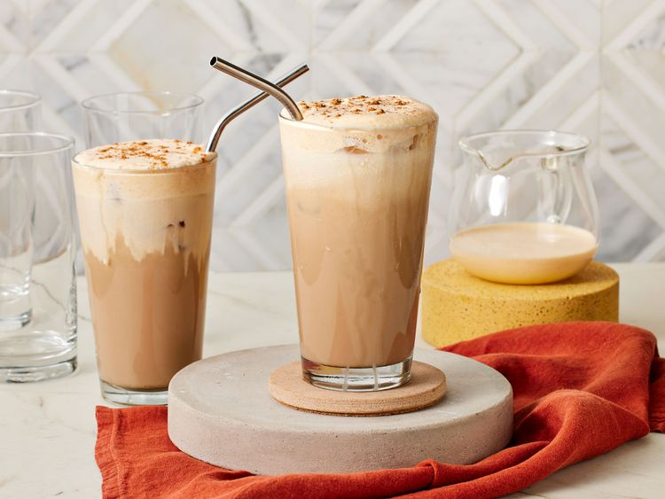
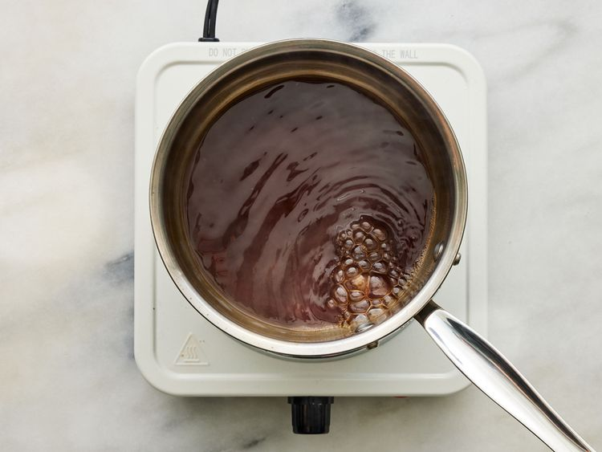
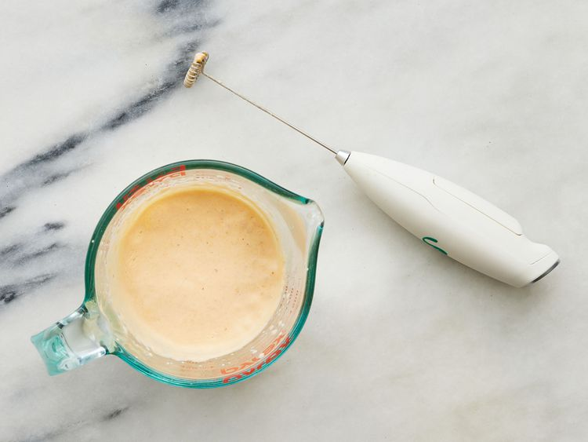
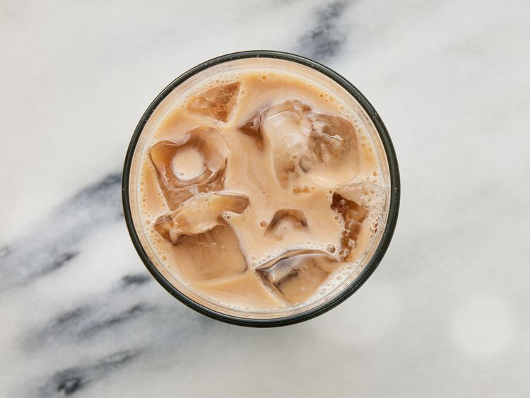
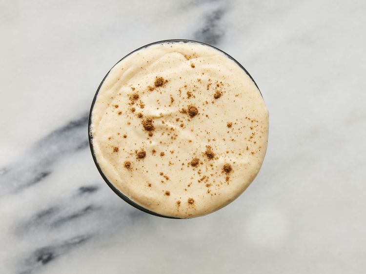

Our test kitchen experts love to get an annual fall drink from Starbucks, but after trying this copycat version of the pumpkin chai, they say they'll never go back! ucks version tasters said this recipe has "lovely creamy texture that made Starbucks taste watery in comparison."
When tasted side by side with the Starbucks version tasters said this recipe has "lovely creamy texture that made Starbucks taste watery in comparison.
Plus, it tones down the overwhelming sweetness from the original version to really let the fall flavors shine through.
Gather all the ingredients

Prepare the Iced Chai Latte : Bring chai concentrate to a boil in a small saucepan over medium-high. Cook, undisturbed, until reduced by half, about 5 minutes. Pour into a small heatproof bowl or measuring cup and refrigerate until cooled to room temperature, about 30 minutes.

Pour cooled concentrate into a 16 ounce glass and top with ice and milk, leaving 1-inch at the top of the glass. Stir together until combined.

Prepare the Pumpkin Cream Cold Foam: Place all ingredients in a small measuring cup or jug. Using a handheld milk frother, froth until thick and creamy, about 1 minute.
Pour desired amount of Pumpkin Cream Cold Foam over the Iced Chai Latte and dust with additional pumpkin pie spice. Serve immediately.
